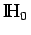
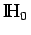

Inhalt Index DeskTop Bronstein

 Funktionalanalysis Adjungierte Operatoren in normierten Räumen Selbstadjungierte Operatoren
Funktionalanalysis Adjungierte Operatoren in normierten Räumen Selbstadjungierte Operatoren


Sei  ein Teilraum eines HILBERT-Raums . Dann ist nach dem Projektionssatz für jedes
ein Teilraum eines HILBERT-Raums . Dann ist nach dem Projektionssatz für jedes  seine Projektion x' auf
seine Projektion x' auf  und demzufolge ein Operator P mit Px=x' von
und demzufolge ein Operator P mit Px=x' von  auf
auf  definiert. P heißt Projektor auf . Offensichtlich ist P linear, stetig, und es gilt . Ein stetiger linearer Operator P in
definiert. P heißt Projektor auf . Offensichtlich ist P linear, stetig, und es gilt . Ein stetiger linearer Operator P in  ist genau dann ein Projektor (auf einen geeigneten Unterrraum), wenn gilt:
ist genau dann ein Projektor (auf einen geeigneten Unterrraum), wenn gilt: